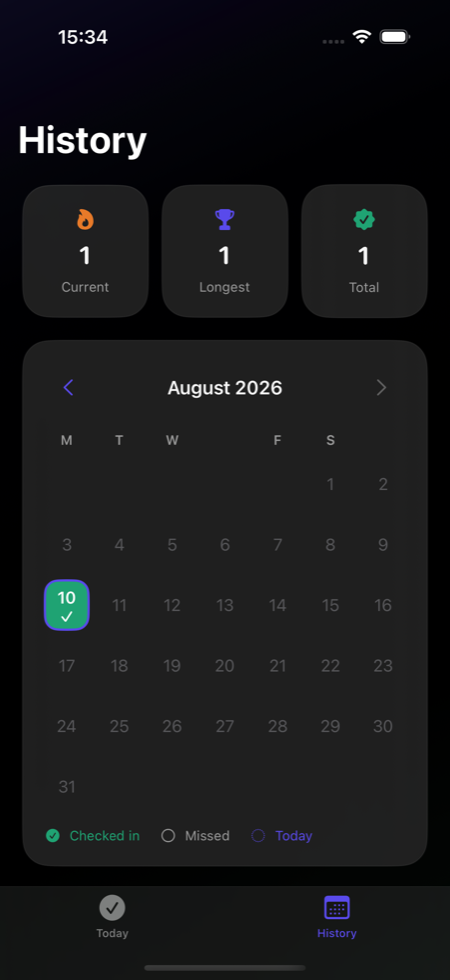
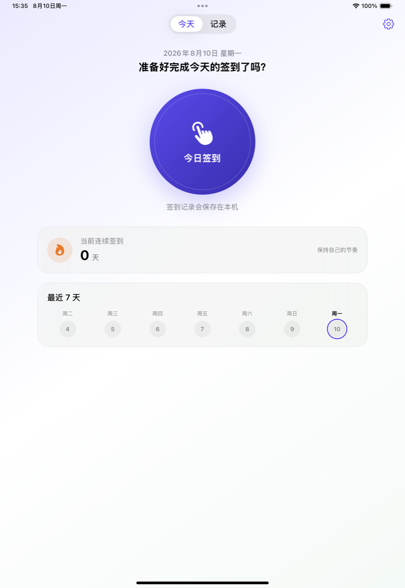

Pulse 1.0 · Design Direction Advisor
B：把签到变成安静的每日仪式。
三个方向分别来自结构现代主义、安静极简主义和数字原生设计。B 已成为 Pulse 1.0 的唯一视觉系统；A 与 C 继续保留，用于说明为什么这不是一次普通的换色。
B
2026-08-10 已选定 B“安静的每日仪式”为 Pulse 1.0 唯一视觉基线，并录用 B2“开放日环”AppIcon。下面三个方向只保留为决策记录；正式图标已完成 1024、180、60、40、29 px 与模拟器主屏检查。

真实运行 · iPhone 历史页

真实运行 · iPad 今日页
Current baseline
结构已成立，品牌尚未成立。
当前实现把签到主操作、历史和统计讲清楚了，但紫色渐变圆形按钮、半透明圆角卡片和多色图标缺少独占性。继续微调这套默认语言不会自然产生品牌。
- 保留：两秒内完成签到、状态文字、原生动态字体和清晰的历史结构。
- 重做：品牌主色逻辑、卡片容器、数字层级、完成反馈和 AppIcon。
- 约束：不游戏化、不制造焦虑、不牺牲深色模式与无障碍。
Three distinct schools
视觉方向
B 已冻结为唯一生产方向，不再混合 A 的荧光高对比或 C 的数字光环。A / C 只作为方案审计，不承担任何运行时配置职责。
精确克制结构
今日页草图
PULSE / DAILYMON
10
今天，只需要完成一次。
今日签到✓
0当前连续
签到天数
- 具体变化
- 减少大圆角与材质卡片，使用网格、规则线和大数字。
- 完成反馈
- 黑色操作块切换为高亮日戳，明确、短促。
- AppIcon
- “一天的环 + 一次完成”的几何组合。
- 风险
- 若处理过硬，可能失去私人习惯工具需要的温度。
留白温和仪式
今日页草图
二〇二六年八月十日 · 周一
给今天
留下一个记号
今日签到
0连续签到 · 天
- 具体变化
- 暖白背景、细字与大量留白，卡片只在需要分组时出现。
- 完成反馈
- 朱红印记从空心变实心，触觉轻，不使用奖励爆炸。
- AppIcon
- 一枚不带文字的现代日戳，保留手工温度。
- 风险
- 超大字体和信息密度需谨慎，过度留白会降低效率。
活性节奏数字原生
今日页草图
PULSE010 / 365
AUGUST · MONDAY
10
今日签到
CURRENT
STREAK0
- 具体变化
- 深靛底、单一薄荷高亮、环形节奏；减少装饰性渐变。
- 完成反馈
- 环收束为勾，微动遵循 Reduce Motion，状态仍有文字。
- AppIcon
- 同心日环穿过一次脉冲，深色主屏上识别度强。
- 风险
- 容易显得过度科技化，长期观看和浅色模式需要控制。
正式选择：B · 安静的每日仪式
方向选择已经冻结；本画布继续保留 A / C 作为决策审计，不再承担生产配置职责。
Guardrail 01
可靠性先于庆祝
只有持久化成功后才出现完成反馈；任何方向都不能用动画掩盖保存状态。
Guardrail 02
状态不只依赖颜色
签到、漏签、今天和未来日期继续同时使用文字、形状或图标表达。
Guardrail 03
无障碍不是二次适配
正式实现必须从一开始覆盖动态字体、VoiceOver、Reduce Motion、浅色和深色模式。